КАК ИГРАТЬ
| WASD | идти |
| Shift | бег (тратит выносливость) |
| Пробел | прыжок — через ударные волны тоже |
| ЛКМ | удар мечом / выстрел; ППШ — зажать |
| 1 2 3 4 / колесо | меч, обрез, револьвер, ППШ |
| 1 2 3 в разговоре | выбрать ответ; Пробел / ЛКМ — дальше |
| Esc | пауза: звуки, музыка, трек |
- Задача всегда в левом верхнем углу. Когда нужно найти дверь или дорогу, на экране появляется стрелка с расстоянием.
- Время идёт сверху по центру. В первую минуту внизу всплывают подсказки и исчезают, как только ты сделал, что нужно.
- Чекпоинты расставлены по дороге: после смерти ты возвращаешься к последнему. В бою с финальным боссом — прямо к началу боя.
- Аптечки лежат у дороги, на алтаре в церкви и в замке: +50 здоровья, если ты ранен.
- Музыка: в меню и в паузе кнопка «ТРЕК» переключает три мелодии, а «MP3» включает твои собственные файлы (они остаются у тебя в браузере).
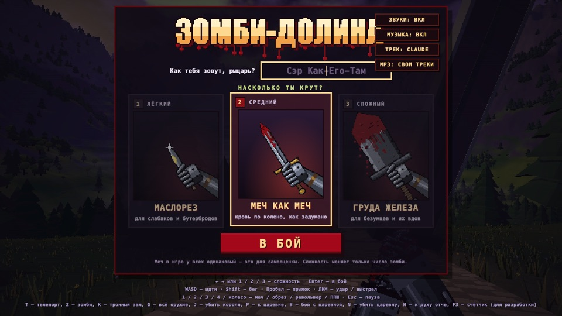
Сложность
Меч в игре у всех одинаковый — карточки в меню только для самооценки. Сложность меняет три вещи:
| Лёгкий | Средний | Сложный | |
|---|---|---|---|
| Зомби | ×0,5 | ×1 | ×1,7 |
| Здоровье боссов | ×0,6 | ×1 | ×1,5 |
| Убийств до тронного зала | 100 | 250 | 500 |
ОРУЖИЕ
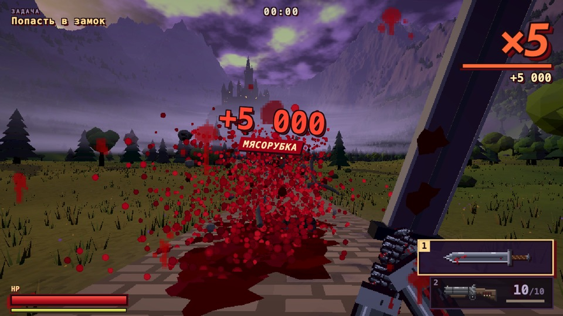
Двуручный меч
с самого началаКомбо из трёх ударов: справа налево, наотмашь, и тяжёлый удар сверху, который сотрясает землю и отбрасывает всех вокруг. Рубит насквозь нескольких, отсекает руки, ноги и головы.
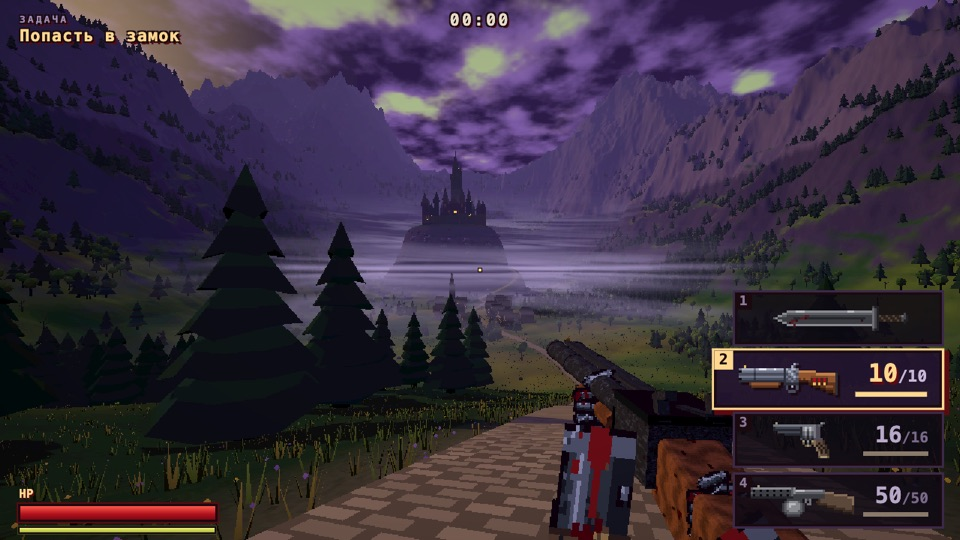
Обрез
с самого начала10 патронов, восстанавливаются сами. Дробь в упор рвёт на куски, издалека только щекочет. Видно, куда легла дробь.
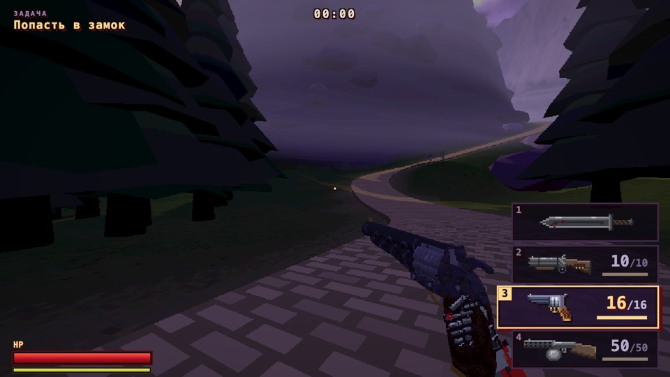
Револьвер
даёт отец Варфоломей16 патронов, точный. Выстрел в голову убивает зомби наповал и сносит ему голову.
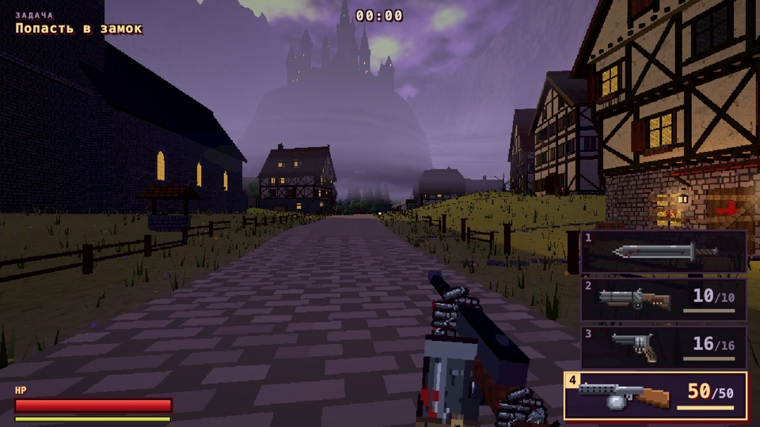
ППШ «Папаша»
даёт дед Пахом50 патронов, зажми ЛКМ. Урона мало (4 попадания на зомби), крови много: длинной очередью отрывает куски. Чем дольше очередь, тем сильнее разброс.
ОЧКИ, КОМБО И ОЦЕНКА
- Каждое убийство в коротком окне поднимает множитель до ×8. Укус режет его вдвое.
- Больше очков за стиль: голова с плеч, пополам, оторванные конечности, несколько за один удар или выстрел, хедшот, дуплет в упор.
- В конце уровня — экран в духе Hotline Miami: счёт, время, убийства, снесённые головы, лучшее комбо, смерти, найденные секреты и буква оценки.
- Экран конца подскажет, что ты упустил — но не скажет, как это найти.
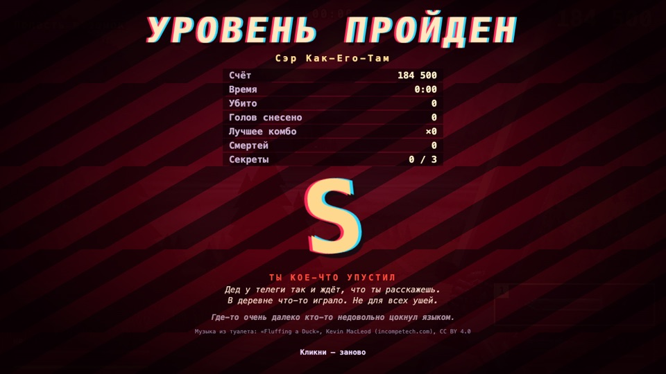
ВРАГИ
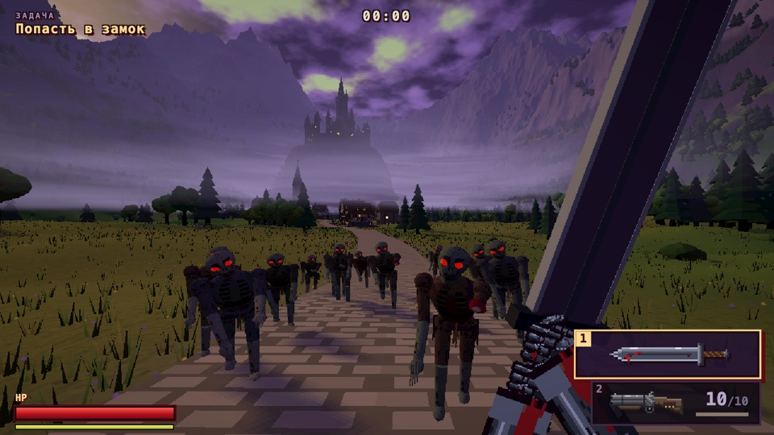
Шатун
обычный зомбиСгорбленный, тощий и тяжёлый одновременно, с красными глазами. Ходят толпами и волнами. Перед укусом замахиваются — можно отойти или сбить удар. Без ног ползут, без рук кусаются, без челюсти царапаются.
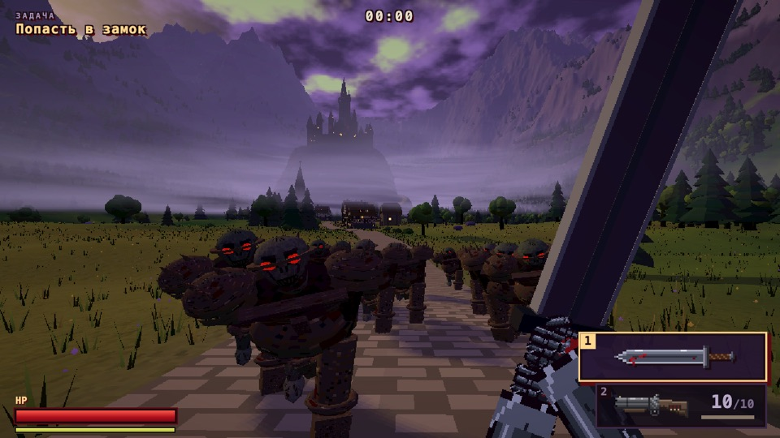
Громила
дорога к замку и дальшеОгромный и бронированный: обычный удар мечом наполовину гаснет в нём, а тяжёлый сверху проходит целиком. Бьёт так, что отбрасывает назад.
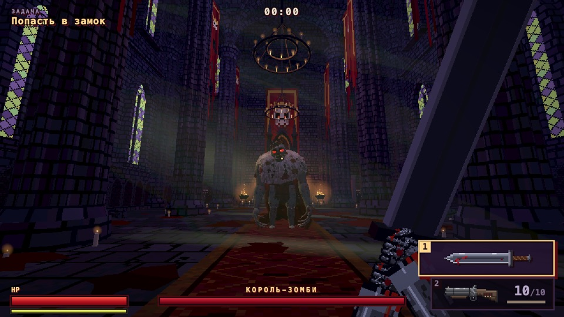
Король-зомби
боссЖдёт у трона, просыпается, когда ты входишь в зал, — и двери захлопываются. Три фазы:
- удар кулаками с ударной волной, размашистый удар когтями, захват, если стоять вплотную;
- прыжок с кольцевой волной (перепрыгни или убеги) и призыв мертвецов;
- ярость: быстрее, связки ударов, рёв, который сбивает с ног.
Тяжёлый удар мечом или дуплет в упор заставляют его пошатнуться.
▶ СПОЙЛЕР: настоящий финальный босс
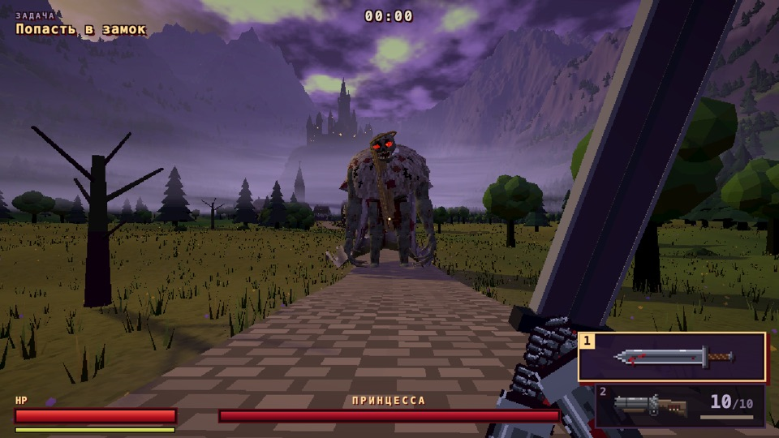
Принцесса
финальный боссПочти у самого старта она превращается. Втрое больше короля, бой — в поле на склоне, и держаться подальше бесполезно:
- вблизи — когти, захват и вращение платьем: выйди из круга;
- на средней дистанции — хлыст волосами по прямой: отойди в сторону;
- издалека — плевки кровью по дуге туда, где ты стоишь;
- со второй фазы — руки из земли и кровавый дождь: земля сначала бурлит, уходи;
- изредка — рывок по прямой: увернись вбок, после него она теряет равновесие;
- призывает мертвецов, в третьей фазе ревёт.
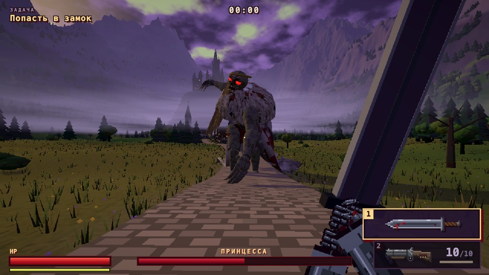
Как её победить
Держись на средней дистанции, но не на одной линии с ней. Бей после рывка и после промаха захватом. Если ты оставил деду Пахому его ППШ и он дожил до финала — он поможет.
Когда она умирает, из неё бьёт кровавый гейзер и над долиной идёт кровавый дождь. Потом нужно дойти туда, где ты очнулся.
ПЕРСОНАЖИ
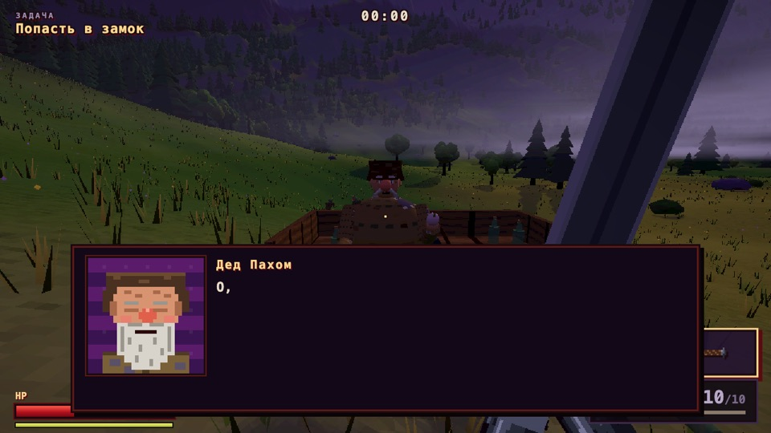
Дед Пахом
телега у поляСидит на телеге с бутылками и луком. Пока ты дерёшься рядом, орёт «Руби их, железный!». Отдаёт ППШ за волшебное слово. Расскажет про мор, короля, царевну и бабку-ведьму — если спрашивать. После разговора за ним приходят зомби.
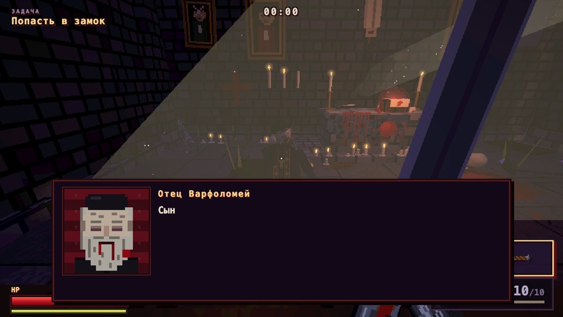
Отец Варфоломей
церковь в деревнеУкушенный священник у алтаря. Чует, что от тебя пахнет землёй. Отдаёт отцовский револьвер. Через несколько секунд после разговора обращается и идёт на тебя — сильнее и быстрее обычных.
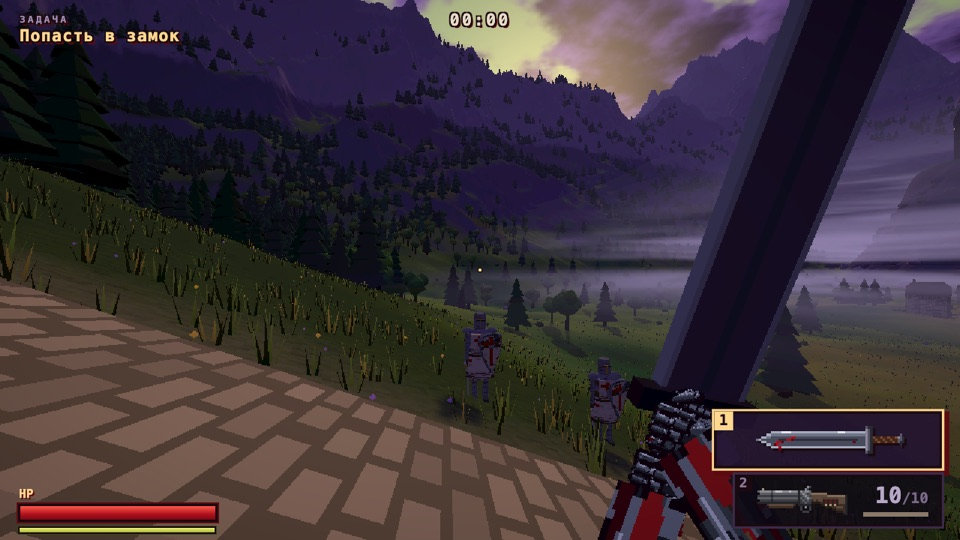
Рыцари короля
последнее ополчениеПарами держат дорогу. Дерутся с мертвецами, а не с тобой — и почти бесполезно: каждый уносит с собой одного зомби, не больше. Их разрывают и едят. Ты тоже можешь их зарубить.
МЕСТА
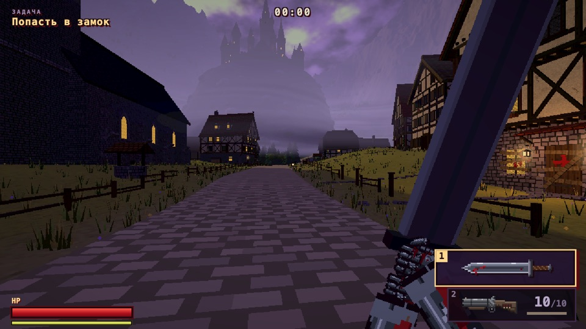
Деревня
Фахверковые дома, разбитые двери, кровь на стенах, колодцы, огороды. Волны лезут из домов и с кладбища.
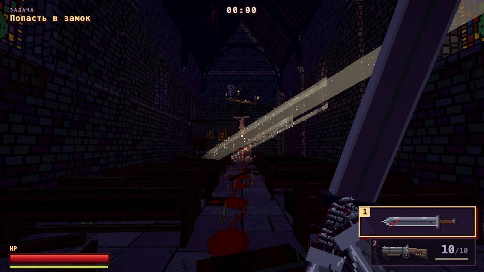
Церковь
Можно войти. Скамьи, распятие, свечи, аптечка на алтаре — и отец Варфоломей.
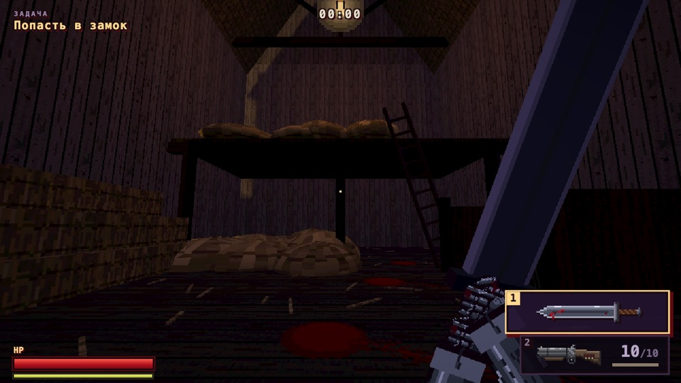
Амбары
В три амбара можно зайти: сеновал с лестницей, тюки, стойла, фонарь на балке и кровавый след в последнее стойло.
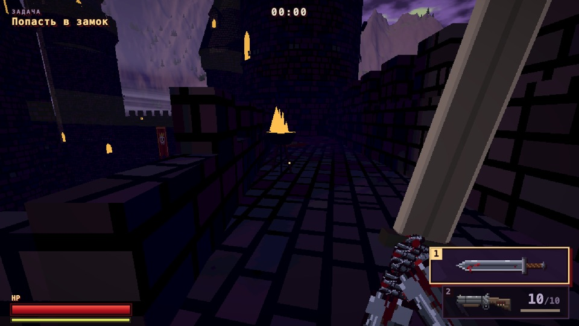
Замок
Двор с виселицами, кострами и пиками всегда полон мертвецов. На стены ведут лестницы: там жаровни, баллисты, котлы со смолой и мёртвые лучники.
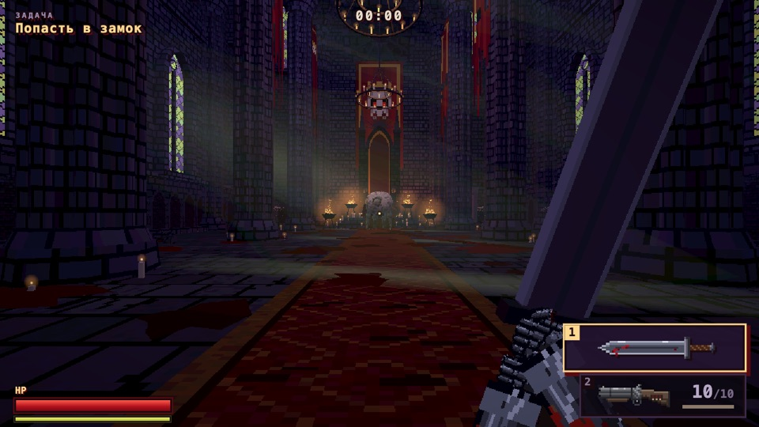
Тронный зал
Закрыт, пока ты не прольёшь достаточно крови нежити — табличка у дверей считает. После смерти короля в боковом проходе светится дверь к подъёмнику.
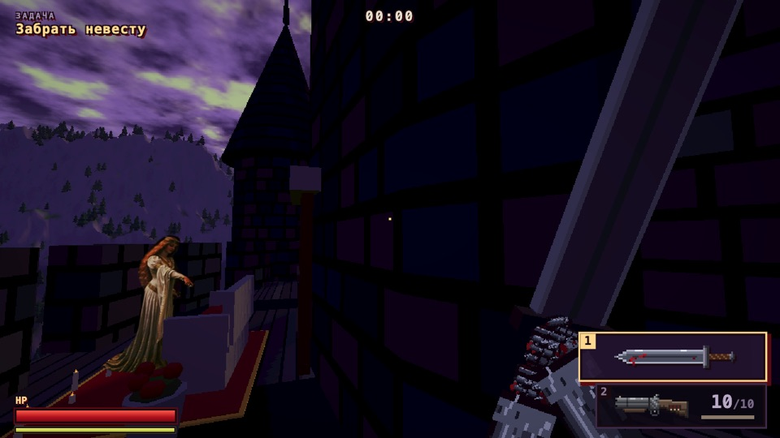
Вершина башни
Подъёмник на цепях везёт на самый верх. Там, у скамьи с подушками и розами, ждёт принцесса. Возьми её на руки — и неси домой.
СЕКРЕТЫ
Экран конца считает три секрета и намекает на остальное. Ниже — всё, без утайки.
▶ СПОЙЛЕР: туалет
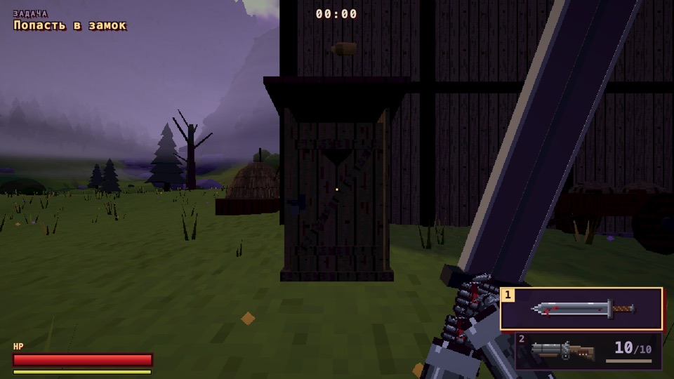
За самым дальним от дороги амбаром стоит деревенский туалет с сердечком на двери и навесным замком. С дороги его не видно. Подойди ближе — изнутри играет музыка.
«Fluffing a Duck», Kevin MacLeod (incompetech.com), CC BY 4.0.
▶ СПОЙЛЕР: дед Пахом
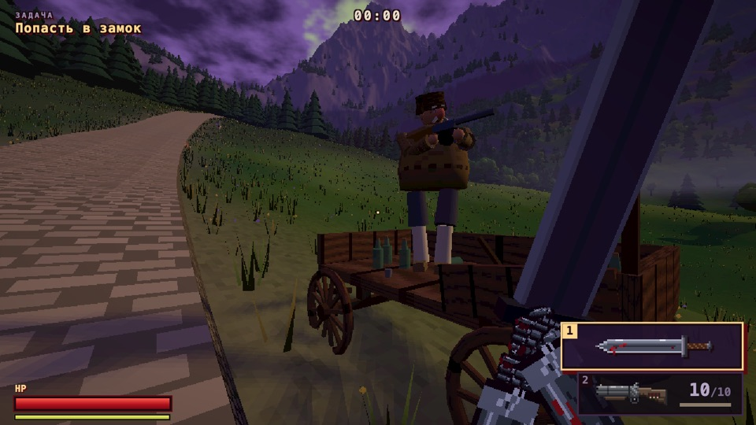
- После разговора к Пахому идут четверо мертвецов из поля. Заруби их — и он выживет.
- Когда он спрашивает волшебное слово, можно ответить «Оставь себе, дед. Тебе нужнее». Тогда ППШ останется у него: он будет отстреливаться от мертвецов, которые за ним придут, а в финальном бою встанет на телегу и будет стрелять в принцессу.
- Если Пахом жив, после финального боя к нему можно подойти ещё раз — он всё видел. В конце этого разговора — намёк на того, кто тебя послал.
- Если молчать в первом разговоре, он расскажет про длинного в балахоне.
▶ СПОЙЛЕР: святой Варфоломей (самый большой спойлер)
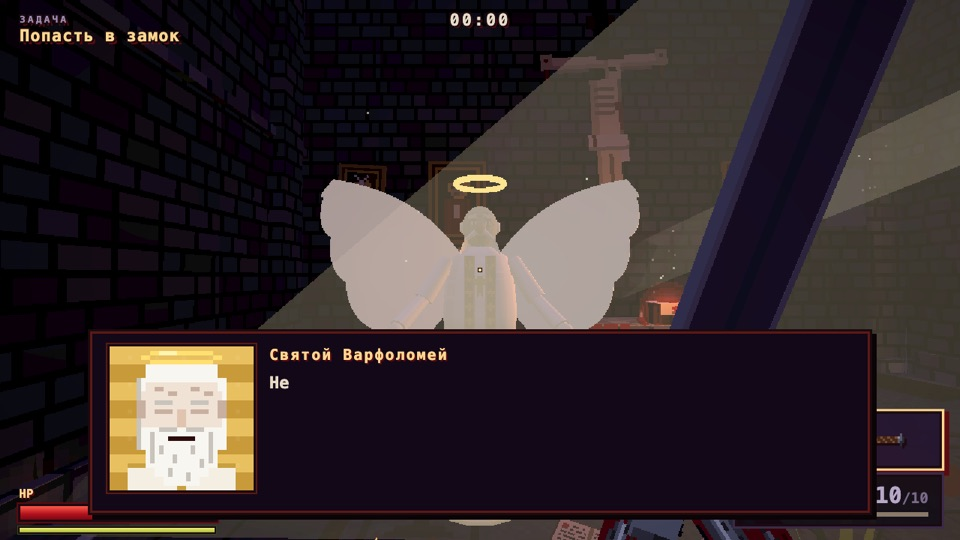
- Отца Варфоломея можно отпустить человеком: в разговоре спроси, укусили ли его, сколько ему осталось, и предложи уйти человеком. Или просто ударь его мечом после разговора, пока он не обратился.
- Если ты понесёшь принцессу, так и не зайдя в церковь, отче к тому времени умрёт сам — ни револьвера, ни святого.
- Если отпустил — после финального боя вернись в церковь. Над тем местом, где он лежал, будет святой в белом и золотом. Он скажет то, чего игра больше нигде не говорит. Потом он вознесётся.
▶ СПОЙЛЕР: принцесса на руках
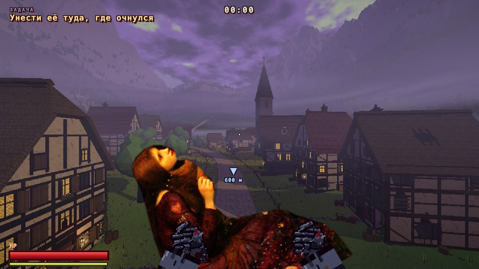
Пока ты её несёшь, оружия нет, долина пустеет, играет тема любви, а она говорит ласковые вещи. Прислушайся: некоторые фразы звучат… странно.